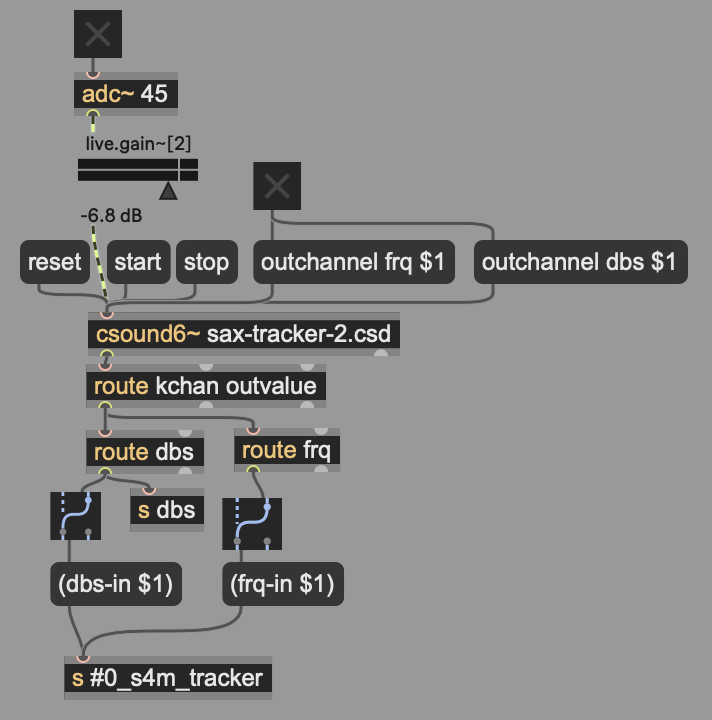

Implementation Notes¶
Tracker¶
The tracker component receives audio input outputs note events to the sequencer layer. Note events at this point consist solely of a MIDI note number representing pitch, and a decimal from 0 to 1.0 representing amplitude at onset. In this first version of S4M-Cycles, note durations are not yet tracked. This decision was made for two reasons: to simplify the tracker layer during initial development, and to allow notes to be sent to the sequencer immediately on onset. Note duration in the sequencer is thus static, and the synthesizer patches were chosen around this, mimicking plucked strings.
Audio Input & Analysis¶
Audio is sent from Max to a csound6~ object, where it is analyzed and transformed into discrete pitch and amplitude messages, sent once per control pass. Csound uses a control-rate, in which kspms samples are handled per computation buffer and control signals (k-rate variables) are updated onceper kspms samples. In the csound6~ object, which I porte from Victor Lazzarini’s csoundapi~ object for Pure Data, this rate must be an even divisor of the Max signal vector size.
The ksmp rate in Csound also affects audio analysis: a larger ksmp value provides a larger bin for analysis at the cost of increased latency. Empirically, I found a ksmp of 16 running with a Max signal vector size of 32 to strike a good balance of pitch and amplitude estimation accuracy versus latency.
The csound instruments send messages consisting of the output frequency in cycles-per-second and output amplitude in RMS amplitude converted to decibels. These are sent once per ksmp, interpolated into Scheme s-expressions using Max message interpolations, and sent to the Scheme instance handling note tracking.
{kind=link}

The csound code consists of two always-on instruments, one for frequency and the other for amplitude. After experimenting with the various Csound pitch tracking opcodes, I found the best method for soprano saxophone was the pitchamdf opcode, which uses the Average Magnitude Difference Function, and is documented in the manual as being appropriate for real-time tracking of monophonic signals.
Conversion to Note Events¶
The signals detailed above are sent as Scheme function calls into the Scheme program for converting to note events. This is a work in progress and currently does not handle new legato notes, an area I intend to improve.
The algorithm in the Scheme program is as follows:
incoming db and cps values are each handled in their own listener functions, with each function receiving a value once per ksmp (i.e., at control rate)
previous values for each are saved in global variables for comparing to the previous ksmp
user configured values are set for db-delta, db-threshold and debounce time in ksmps
- a new onset is considered to have occured if:
the current db value exceeds the db-threshold
the current db value is greater than the previous by db-delta or more
no previous onset has occured in the previous debounce number of ksmps
- on a new onset, the following occurs:
the next onset-wait ksmps are ignored so that noisy attacks are not used
the next frq-buf-size cps values are stored in a circular buffer (in use, 5 to 7)
simultaneously, the next db-buf-size values are stored in a circular buffer
- when an onset is detected and the two buffers have been filled:
the frequency buffer contents are sorted numerically and the median value used as the value that is converted to nearest MIDI note number and used as the detected pitch
the db buffers mean db value is calculated and converted to an amplitude value, using the configurable values for dbs-ceiling and dbs-floor as scaling values
the calculated onset values for MIDI note number and amplitude are then sent out the tracker S4M instance, displayed in the Max patch (for debugging) and sent to the sequencing instance.
Sequencer¶
The sequencer layer consists of four looping sequencers that clock off an incoming Max message sent from a metro object every X ticks, where X is user configurable, and ticks is Max ticks at 480 PPQ. Values from 1 to 4 provide an high degree of accuracy and appear to perform adequately.
The sequence objects store notes in a hash-table (the Lisp equivalent of a Python dictionary), keyed by tick time within a master loop length set in beats. Values stored are themselves hash-tables, allowing the sequencer to store arbitrary numbers of fields. This is used to store meta-data such as initiating take-number, note repetition number, and note probability, in addition to the values for pitch, amplitude, and duration. (As explained earlier, duration is a static, user-configurable value set in each sequencer, and thus is not related to the length of the note on the saxophone.
Each synthesizer track (four in my performance) has its own sequencer object, where each sequencer maybe be set to a separate loop length in beats. The global tempo of the sequencers may be changed by changing the tempo of the Max clock source in the containing Max patch.
Because notes are stored at absolute tick values (rather than every quantized sixteenth note as with a step sequencer), notes may be stored very close together causing smearing. To prevent this, the sequencer has a user configurable “blast radius” of a certain number of ticks. When a note is added to a sequencer, any notes on either side within this blast radius are erased. This achieves the goal of having the sequencer be easy to manage (as with a monophonic step sequencer) while preserving micro-timing from the player.
The sequencer has two additional unusual features that help achieve my goal of having the output not obviously sound like a looper:
The first is that each note event has a reps attribute: after the note has played this many times, it is automatically erased from its sequence. This ensures that material captured is only heard for a certain amount of time, and spares the performer from having to explictly erase a track to make room. This value can be set on the fly, allowing the performer to add material that will continue for a long time or only appear briefly. (When a null value is used, the notes will play until explictly erased.)
Secondly, the sequencer has a note probability value set for each sequencer track, which can be set dynamically and, in my performance, was controlled by MIDI faders manipulated with my feet. This is applied to every note on a sequence, enabling me to thin out the texture dynamically and to draw sections to a close by closing the faders for the sequencers (i.e., probability of zero acting as a track mute).
Finally, the sequencer can be recording in either overdub or replace mode. For this performance, I left them all in overdub, relying on the note lifecycles and note probablity to provide me with enough variety.
Transformer¶
When the performer holds down the sustain pedal, note inputs from the tracker are captured in a take buffer in the Scheme program. This is a list of note events (pitch, amplitude) with their corresponding onset times in ticks relative to the main clock. When the performer releases the pedal, the take is considered done and ready from transformation.
Once the take is recorded, its note events are run through a list of transformers. Transformations are handled by a library of transformer functions, with transformations implemented thus far for:
transposition
temporal inversion (retrograde)
inversion at a pitch (reflection)
time compression/expansion
spaced repetitions
randomization of likelihood of notes playing
The main controller module maintains an active transformtiona list of transformers and arguments to them, which can be updated from a Scheme function at any time. These can be called based on any kind of user input.
Once of the goals of this version was to ensure that I could focus on improvising with the saxophone, with a minimum of hands-on operations necessary to ensure adequate variety and change. To achive this, I created banks of preset functions, where each preset consisted of a function that set the active transformer list, the number of repetitions for transformations being added to sequencers, the note rep value, and the note probability value. This ensures I can achieve highly varied results in different sections by calling a new preset function and by varying my use of the take pedal.
In initial development, I had buttons choosing presets, however making decisions about the presets and taking my hands off the saxophone proved to be too much of an interuption to the improvisation process. The solution I used in this performance was to have the preset change automatically, triggered by the pedal release that marks the end of a take.
Variety in transformation chains was achieved two ways: * On each take, the active preset was rotated round-robin through a bank of four presets. * An overall take counter was used to make the algorithms in the presets change depending on the take number.
This allowed me to start the performance with a thinner texture by having the note reps, probability, and take reps ramp up over the first 8 takes, all without requiring any additional input from me.
Controller¶
In addition to the various sequencer objects, the Scheme program consists of a substantial controller layer, with MIDI input, parsing, and routing handled with code that built on tools I built for previous projects. During prototyping, this included button controllers for choosing tracks, bars, and transformer chains, and buttons for running transformations and copying them into specific places in tracks, along with general operations for erasing tracks and choosing the record mode. While all of these worked well, and were productive for interactive composition, they proved too complicated for use in real time without negative effects on my improvisation.
For the purpose of the concert, I reduced controller input to two input streams:
The take pedal selecting the active algorithm preset
A fader box for picking the note probability for each sequencer
The fader box (a BCF-2000) has large, loose faders, allowing me to manipulate these with my feet without taking my hands off the saxophone. These were attached to the note probability, with the fader through range divided into 8 and the probability set as being between 0 out of 7 to 7 out of 7. Thus, with all faders up, the probability setting has no effect, and will a fader full down, the given line is muted. This approach gave me an effective way to thin out texture, and while moving faders with my foot while playing requires some practice, it was definitely doable.
Output¶
The sequencers ultimately control sound by sending control volt and gate outputs to the modular synthesizer, using the Expert Sleepers digital audio to CV conversion modules and their accompanying Max objects. These are low level Max objects, thus it was necessary to make a Scheme layer to drive them from note abstractions was necessary.
As mentioned earlier, the duration of notes from the saxophone is not (currently) captured. Note durations are, at this point, simply set in each sequencer, with synthesizer sounds chosen that work with momentary notes, similar to plucked strings or percussive sounds. The Scheme code uses delayed calls to turn gates off after a note duration has expired.
Amplitude values are mapped variously to additional filter cutoff sounds and amplitude envelope amounts on the synthesizers.